UNIT 1: THE IMAGE. CAPTURE TECHNIQUES AND EQUIPMENTS
1.1 Physics of light and human visión
The nature of light has been established based on a series of theories that have been enunciated over the years to explain its constitution. The most relevant theories in this regard are:
Newton's corpuscular theory: it assumed that light was composed of a series of material particles called corpuscles, which are emitted by different light sources and that propagate in a straight line and in all directions. being able to pass through transparent, but not opaque, media, hence the shadow. But this theory had some limitations, such as the loss of mass thatshould the bodies suffer when emitting said corpuscles or that it could not explain the reason for the behavior of some particles (some could be reflected and others were refracted).
Planck's quantum theory: establishes that electromagnetic waves are made up of quanta or electrons that have a quantity of energy, which is proportional to the frequency of light. Huygens wave theory: he held that light had a wave nature and maintained that the mass of bodies that emit light does not change, that is, that light is a wave that needs a medium for its propagation, which he called ether luminous.
Huygens wave theory: he held that light had a wave nature and maintained that the mass of bodies that emit light does not change, that is, that light is a wave that needs a medium for its propagation, which he called luminiferous ether Maxwell's electromagnetic theory: he defended the existence of electromagnetic waves that travel at constant speed, which is the speed of light.
After the numerous theories about the nature of light, it can be established that light is an electromagnetic wave that is perceived by the human eye. Light has a series of characteristics and effects that are produced when interacting with matter. The sense of sight endows the human being with the ability to locate and interpret the objects found in our environment, thus facilitating adaptation to it. All elements present in the environment reflect or absorb electromagnetic radiation, depending on their molecular composition, which are produced by light sources. Of all the electromagnetic radiation that makes up the electromagnetic spectrum, humans are capable of perceiving wavelengths between 400 (violet) and 700 nanometers (red), a set that is called light or the visible spectrum.
Light is a type of electromagnetic wave, so it has the following physical characteristics:
It is a radiant energy found in nature. It has a very short wavelength. It can propagate both in a vacuum (300,000 km / s) and in other material media, although its speed decreases as a function of the density of the medium in the propagation is taking place. It propagates with a rectilinear path at a constant speed in each medium in all directions.
1.1.1. Optical aspects of human vision
Our eyes are a very complex optical system that allows us to form an inverted image of the outside world. By way of analogy with the operation of the camera obscura, it consists of a closed space that has an opening through which light passes, which will cause the creation of an inverted image on the surface facing the opening and which will give rise to an image sharp. The eye is a spherical globe with a diameter of 2.5 cm covered by different types of layers: 1. External layer. It is made up of: a) Cornea: it is the outermost layer and is transparent. Its function is protective and has a converging lens structure. b) Sclera: it is the opaque layer composed of dense fibrous tissues whose main function is to protect the eye. c) Aqueous humor: it is a transparent liquid produced by the ciliary processes that serves to oxygenate the structures of the eyeball, and that is arranged between the cornea and the iris. d) Eyelids: they act as a protection system from external agents. e) Lacrimal system: produces tears that act as a hydration and protection system for the cornea. f) Eye muscles: they are responsible for eye movements.
2. Middle layer or uvea. It is the middle layer of the eye and in it you can differentiate the iris, which allows regulating the passage of light and its focus, the choroid and the ciliary body, among others:
a) Iris: it is the circular and colored membrane that separates the anterior and posterior chamber. It has the pupil, which is an aperture in the center that varies in size and allows you to control the light that enters.
b) Choroid: it is arranged between the sclera and the retina. It consists of a dark membrane whose functionThe main one is to control the possible rebound of light.
c) Ciliary body: its main function is the production of aqueous humor and is responsible for the changes caused by the accommodation of the lens.
d) Crystalline: it is a biconvex lens that allows focusing on objects that are at different distances.
e) Posterior chamber: it also contains aqueous humor and is located between the ciliary body and the lens. In this area is where the ciliary processes take place.
f) Aqueous humor: it is a transparent liquid produced by the ciliary processes that serves to oxygenate the structures of the eyeball, and that is arranged between the cornea and the iris.
g) Vitreous chamber: contains the vitreous humor, which is gelatinous and transparent and is located between the lens and the retina.
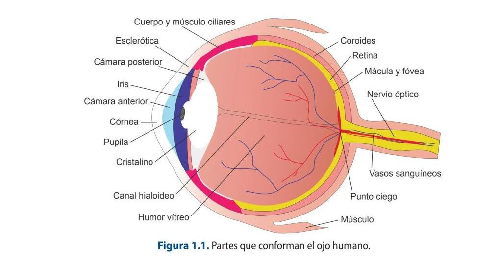
3. Inner layer or retina. It is connected to the brain through the optic nerve. It is made up of:
a) Photoreceptor cells: they are responsible for absorbing light and transforming it into nerve impulses. These can be of two types: cones and rods.
b) Fovea: central region of the retina, only contains cones.
c) Optic disc: made up of axons that carry information from the eye to the optic nerve.
1.1.2. How the eye works
Light enters the eye through the cornea and, due to its density, which is higher than that of air, causes a change in the direction of the rays and a reduction in speed. Once through, meets the iris, which allows light to focus and pass through. This muscle is made up of the pupil, whose opening can be modified depending on the incident light, among other reasons. It then passes through the aqueous humor until it reaches the lens, at which time the lens is accommodated, which is the adjustment responsible for focusing the incident rays, that is, it is responsible for the sharpness of objects at different distances. Once refracted, it crosses the vitreous humor until it reaches the retina where it activates the rods, which are responsible for detecting
light and movement, and the cones, which are responsible for visual acuity and color perception. The image that forms on the retina is temporary and inverted. The light, when it reaches the photoreceptor cells, is converted into electrical impulses, which are transported by the axons through the optic nerve to the brain.
Watch the Video:
How the Eye Works
Cones and rods are the cells in charge of detecting the different wavelengths that make up the solar spectrum and transforming it into electrical impulses that will be sent to the brain through the optic nerve, this being in charge of creating the sensation of color.
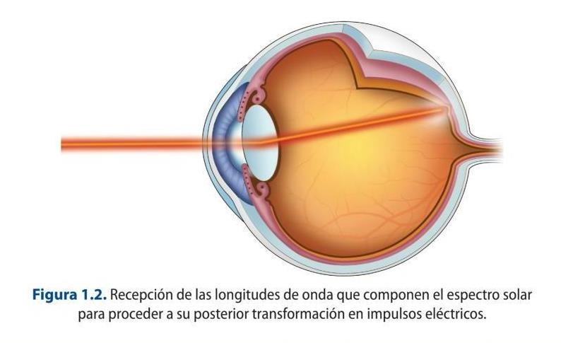
Cones are responsible for color vision and there are three types of cones that are sensitive to the colors red, green and blue. In addition, they are responsible for spatial definition and, as they are not very sensitive to light intensity, they provide photopic vision, that is, with daytime illumination levels. The rods are responsible for scotopic vision, that is, the visual perception that occurs with very low levels of illumination. There are around 100 million rods and they are not sensitive to color but are sensitive to light intensity, so they add aspects such as brightness and hue to color vision.
Our brain is in charge of identifying colors, according to the constitution of our ocular system, so that color is a subjective and variable concept depending on the interpretation made by each person.
Watch the Video:
What Colour Is This Dress? (SOLVED with SCIENCE)
1.1.3. Physical characteristics of light
Light propagates with a rectilinear path in all directions and constant in each medium. The main source of natural light is the sun, which radiates light waves that are propagated through the atmosphere. A curious fact: if the atmosphere did not exist, the light would propagate indefinitely until it encountered an obstacle.
The materials that make up an object can be:
Opaque: those that do not let light pass through, so the energy they receive is transformed into heat. Stones or wood are examples of opaque materials. Transparent: those that allow the passage of light so that the energy they receive is forwarded as transmitted light. The atmosphere would be the quintessential example of this type of material. Translucent: those that allow the passage of light partially.
When light falls on an object, the beams can behave in very different ways depending on the type of material and its surface: reflection, refraction, scattering, diffraction, transmission, absorption and polarization, which are explained below:
Reflection phenomenon
Reflection is the change in the direction experienced by a light beam after striking a surface that will vary depending on the constitutive characteristics of the material itself. The direction that the reflected beam takes depends on Snell's law, which establishes the relationship between the index of refraction of each medium and the exit angle of each medium with respect to the normal.
There are two types of reflection: specular and diffuse. Specular reflection occurs if the surface is shiny or polished, so that all beams are reflected in one direction and parallel to form a true image. An example of this would be mirrors. On the other hand, diffuse reflection occurs when the surface is rough and irregular, so that the reflected beams go out in different directions.
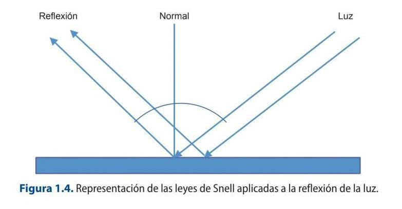
Refraction phenomenon
Refraction is the change that the direction of a light beam undergoes when passing from a transparent medium (glass, air ...) to another of different density (water ...) as a consequence of the change in the speed of propagation in each one of those
means. This is the explanation why when putting a pencil or a straw in a glass of water seems to break.
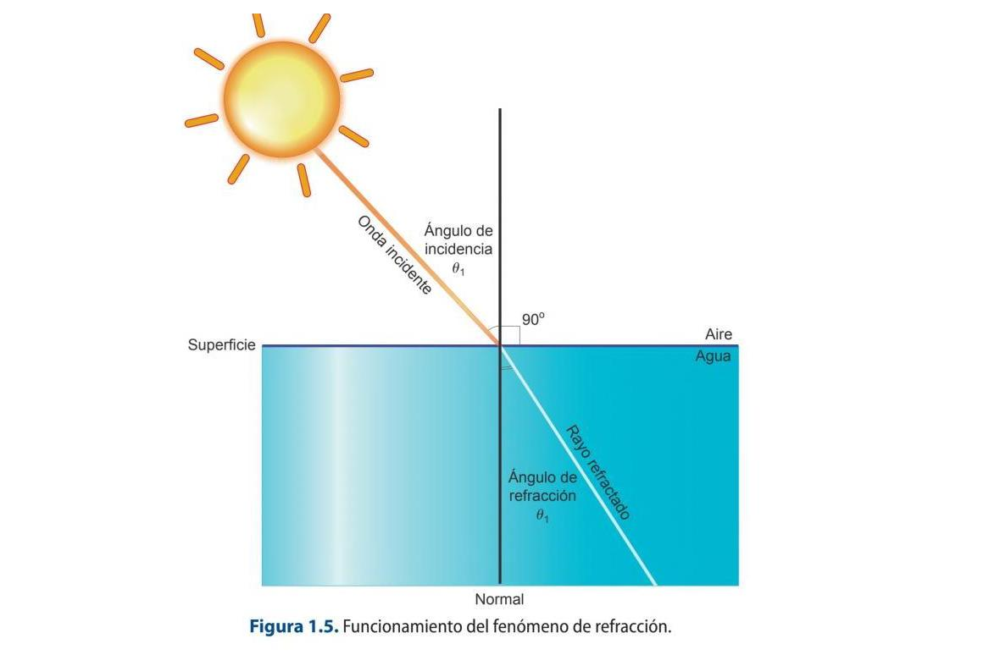
It is important to note that refraction only occurs if the beam is incident obliquely on the separation surface of the two media and provided that they have different refractive indices.
Absorption phenomenon
It occurs when a beam gradually decreases in intensity as it propagates through a medium. The energy absorbed in the form of light is transformed into energy in the form of heat. In this way, when white light falls on a surface, it absorbs a part of the spectrum and reflects a series of wavelengths that constitute the color of the object. There are different types of absorption depending on what type of wavelengths the material absorbs. In this way, a total, partial and selective absorption can occur. Thus, if an object reflects all the components of light, it will be white, and if the opposite happens, it will be black.
Interference phenomenon
It is an effect that occurs when two or more waves overlap each other giving rise to a wave of greater, lesser or equal amplitude. This phenomenon occurs with all types of electromagnetic waves, not only with light. There are two types of interference: constructive and destructive. Constructive interference occurs when the overlapping waves are in phase, that is, the peaks and valleys of both coincide, so the resulting wave is the sum of the two. Destructive interference occurs when two waves of the
same frequency are out of phase with each other, so they both cancel out and the waves are out of phase.
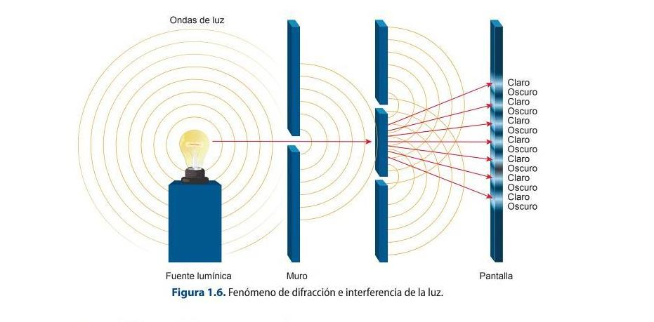
Light diffraction phenomenon
This phenomenon consists of the desviation of light that is caused in the profile of objects that is found when propagating. This scattering produced at the edge of objects is called diffraction.
Light polarization phenomenon
It is a phenomenon that occurs in electromagnetic waves in which the electric field oscillates only in a plane called polarization, that is, the longitudinal waves oscillate in the same direction as their propagation.
1.1.4. Colour
Color is not an intrinsic property of objects. What causes something with a certain color to be perceived are the following factors:
The properties of the light incident on the object. The chemical properties of the matter that make up bodies. The human visual system that will determine the final color sensation perceived by our brain.
Without the presence of light it would be practically impossible to perceive the chromatic sensation and our surroundings. Every illuminated body absorbs all or part
of the electromagnetic waves and reflects the rest. The reflected waves are analyzed by the eye and interpreted colours according to the lengths corresponding waveforms. This physical phenomenon, like sound, propagates through waves.
Color can be achieved through different types of mixtures, which are:
Additive color mixing: consists of mixing colors by adding light, so that the resulting colors are brighter than those initially used. The primary colors of the additive mixing system are blue, green and red. Mixing these you get the secondary colors of this system, which would be yellow (green + red), magenta (red + blue) and cyan (green + blue). The sum of all the colors gives rise to white.
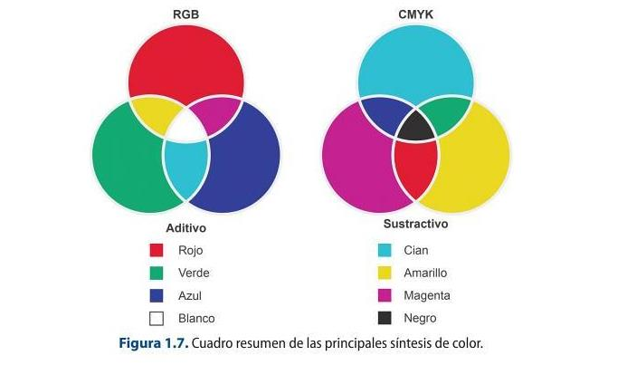
Subtractive synthesis: it is a method that consists of the exact reverse procedure to the previous one, that is, obtaining the colors is achieved by subtracting wavelengths from white light. To carry out this subtraction of wavelengths, filters with the colors cyan, yellow and magenta, which are the subtractive primary colors, are used to obtain the colors red, green and blue. The sum of all the colors gives rise to black.
Partitive mixing: it is based on the use of colors pigment, which are yellow, blue and red, as primary colors, whose mixture with each other will give rise to purple, orange and green. As you can see, it is possible to achieve any shade by adding three primary colors. This is what is known as the trichotomy principle, which was defined by Grassmann. Grassmann's laws are the origin of the possibility of reproducing any color from the three primary colors. They are a
set of axioms that define the trichromatic mixture of colors that serves as the basis for quantitatively measuring color.
The law of trichotomy establishes four assumptions about obtaining the color:
First law: any color can be obtained from the sum of three primary colors. Therefore, it is possible to achieve all the perceived colors by mixing three bands of the visible spectrum (red, green and blue) in the appropriate intensity ratio.
Second law: any color that is additively mixed with another can be substituted, in turn, by another equivalent without changing the result obtained. A color obtained by mixing other primary colors, if these are modified, is a color analogous to the first.
Third Law: If two surfaces produce the same color sensation, the luminance can be varied and the hue and saturation remain intact.
Fourth law: the luminance of a color is obtained from the sum of the luminance of the primary colors.
Colors have the following attributes:
Tone or hue: corresponds to the sensation of color that it produces, that is, the color that corresponds to each length ofspectrum wave. Example: red, blue ... Saturation or chroma: refers to the amount of white light that a color has. For example, pastel colors are desaturated colors, since they use a lot of white in their constitution. Luminance or brightness: it is the sensation of luminosity that a color produces, that is, its intensity.
Colors are usually represented in chromaticity diagrams, which are systems that allow colors to be identified based on their tone and saturation. These diagrams have very diverse applications, from the textile industry to television systems. Some of the most important examples of color diagrams are Maxwell's triangle and the CIE system.
1.2. How a video camera works
Professional cameras have undergone a number of modifications in three main areas: reduction of weight and size, use of CCD sensors and, finally, the use of digital systems. The camera works very much like the human eye.
Video cameras capture the optical image produced by a scene to be captured by the camera's optical system. The optical image is projected against a photosensitive mosaic that will generate electrons depending on the intensity of the light received.
The transformation of the light beam into electrical impulses is achieved by using substances that are responsible for releasing electrons in proportion to the amount of incident light. The substances used for this purpose include caesium (cesio) , lithium or selenium, which act as photoelectric cells.
The optical image, which is formed by areas of light and shadow as constituent elements, will have its correlation in thousands of small electric charges, which will determine the definition of the image. From the image projected on the photosensitive mosaic, the transformation of the image into electrical impulses is carried out by scanning a beam of electrons using an orderly and repetitive movement, which scans the image in lines from left to right and from top to bottom.
This reading is dependent on the guidance of the deflection coils (bobinas) in order to be able to analyse point by point. The cameras, in order to operate, need electrical power sources.
1.2.1. Optical system
This is the part containing the system of composed lenses that enable the images to be captured. These systems can be of two types:
Fixed lenses. Variable or zoom lenses.
In this block, other devices can be differentiated, such as:
The lens hood: its function is to protect the lens from knocks and to prevent certain beams of light from shining on it that could damage the image capture. Focusing ring: allows you to focus sharply on the scene you are framing. Zoom or servo: allows the image to be zoomed in or out without moving the camera, i.e. it allows the perspective to be changed when changing from wide to telephoto focal lengths, or vice versa. It has two working possibilities: manual or servo, which acts by varying the speed of zooming according to the pressure applied. Diaphragm ring and servo: its function is to adjust the amount of light that will finally reach the CCD. The amount of light is determined by the aperture of the diaphragm which is expressed by the f-numbers (f: 1.4, 2, 2.8, 4, 5.6, 8, 11, 16, 22). Macro: system that allows images to be captured very close to the lens. VTR button: serves to start and stop recording and is located on the grip of the camera. Back Focus: its function is to adjust the optics to the target so that they are perpendicular to each other. This adjustment should be made with a Siemens star or adjustment chart and whenever it is observed that when working along the entire focus path, the image becomes blurred (pierde nitidez).
1.2 Back Focus on the camera
With a Siemens star, perform the Back Focus as explained above. Observe what happens
when the focus rings are modified along the entire path.
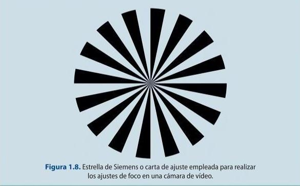
The main function of a camera lens is to transmit the image of an object to a focal plane. There are a series of parameters that must be known before we begin to explain the types of lenses and that will facilitate their typology, such as the following:
1. Diaphragm aperture: refers to the aperture of the diaphragm that is housed inside a lens and that delimits the amount of light that will reach the film in a given exposure time. Therefore, what it will establish is the brightness that a given lens will present. This brightness is measured in f-numbers.
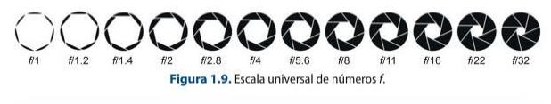
2. Focal length: the focal length is the distance in millimetres from the optical centre to the image sensor.
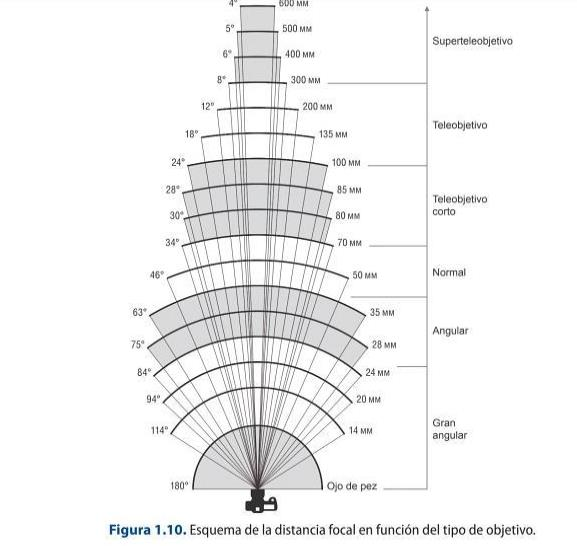
3. Depth of field: This refers to the distance at which an object is defined. This parameter is affected by the following factors:
- The aperture of the diaphragm.
- The distance at which the object is located.
- The focal length of the lens.
The depth of field is greater as the:
The size of the aperture opening is smaller.
The distance to the subject increases.
The focal length decreases.
4. Shutter speed: allows you to capture movement clearly. It does this by increasing or
decreasing the exposure time of the light on the film.
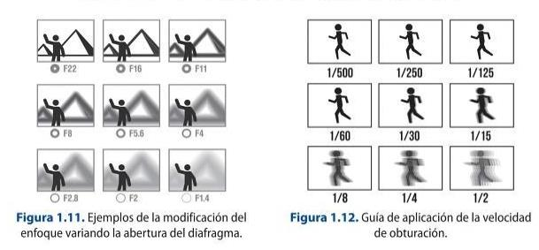
The lenses that can be used in an image capturing system can be of two basic types:
1. Fixed lenses: they can be in turn:
- Photographic.
- Cinematographic.
2. Variable or zoom type lenses: they have different focal lengths and can be telephoto, wide- angle and macro. They are quite heavy and, depending on the type of device to which they are attached, they can be:
- Photographic lenses.
- Cinema lenses.
- HD lenses.
Within the fixed lenses, the lenses can be:
Normal lenses: these types of lenses range from 35 mm to 55 mm and reach an angle of vision of 45º. They offer the following advantages when capturing an image:
- Little distortion.
- Capture a natural perspective.
Wide-angle lenses: reach an angle of view greater than 45° with a large depth of field, so their main use is for capturing very large areas, such as landscapes, for example.
Telephoto lenses are those with a focal length greater than 60 mm up to 2000 mm. They have the following advantages when capturing an image:
- They bring a subject very far away closer.
- They have a narrow angle of view.
- They have a shallow depth of field. (poca profundidad)
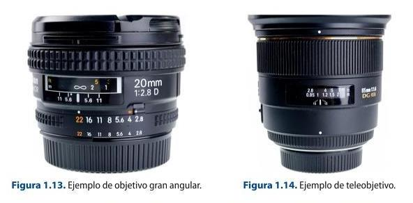
Fisheye lenses: these are special lenses that distort perspective. Macro lenses: these are lenses that allow you to focus at very short distances. The focal length is usually between 50 mm and 200 mm.
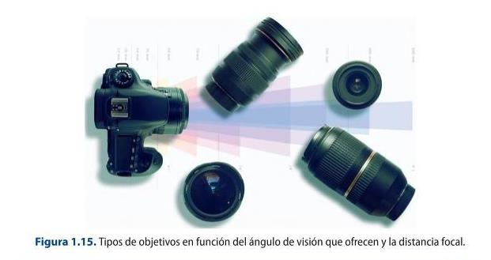
1.3 Working with lenses
Select different lenses and capture an image. Compare the results obtained.
Optical filters
The optical filter is a device that is installed in front of the camera lens with the purpose of
absorbing certain wavelengths of incident light and transmitting the remaining ones, i.e. it lets
the radiations of the same colour pass through and gradually absorbs the others until the
complementary colour is blocked.
The main function of these single lenses is to control and transform the spectral constitution
of the light that will reach the lens in order to impress the film. They are usually made of
materials such as glass, gelatine or plastic that are screwed onto the lens. There are different
types:
1. Lens protective filters: these are screw-on devices used to absorb excess ultraviolet light
rays and protect the lens from possible shocks and hard scratches. There are two basic types:
Skylight (Sky) and UV. Both have the same purpose, but the difference lies in the predominant
yellow of the Sky filter.
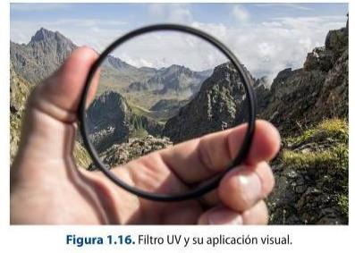
2. Colour filters for black and white: they are used when black and white photographic film is to be used and in those cases in which the colours are very similar and can cause the film to interpret them with the same grey tone.
3. Special effects: these are those used to modify the general appearance of the scene. There are many of them, but the most commonly used are gradient filters (coloured from the top and gradually losing intensity until they become transparent); star filters (they turn the light points of a scene into luminous stars), or diffuser filters (they blur the image, so they can cause problems when focusing).
4. For light control: there are different types: neutral grey filter (if the aim is to reduce the light contrast); neutral density filter (reduces the light intensity in many points and makes it possible to work with more open apertures and slower speeds); polarising filter (consists of two washers that allow, as the washer is turned, to darken the image, thus avoiding that the resulting images have very strong and bright colours), or colour temperature corrector filters (allow to modify the dominant of the scene).
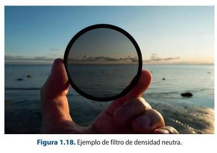
Modern image sensors: BSI, stacked CMOS and global shutter
The book describes the CCD/CMOS sensor in general terms. Today's cameras use back-side-illuminated (BSI) and stacked CMOS designs that place the wiring and memory behind the photodiodes, giving much higher sensitivity and read-out speed. Dual native ISO (dual-gain read-out) delivers clean images across a very wide range of light levels.
A major recent step is the global shutter: the Sony α9 III (2023) was the first full-frame camera to expose every pixel at once, removing the ‘rolling-shutter’ skew that distorts fast motion and flashing lights. Large-format sensors (Super-35 up to full-frame and larger) are now the norm in digital cinema — ARRI ALEXA 35, Sony VENICE 2, RED V-RAPTOR.
Sources: Back-illuminated sensor (Wikipedia) · Rolling shutter (Wikipedia)
1.3 The camera
This section contains the electronic devices that allow the conversion of light beams present in a scene into electrical pulses using devices called CCDs.
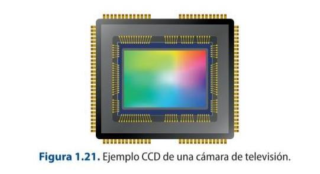
A CCD (Change Coupled Device) sensor is a device consisting of a structure of semiconductor elements or photosensors that allow light incident on them to be converted proportionally into electrical pulses.
CCD: The heart of a digital camera
https://www.youtube.com/watch?v=wsdmt0De8Hw
This video explains how its captures images using a CCD (charge coupled
device). He also shares how a single CCD is used with a color filter array
to create colored images.
1.3.1. Settings
The working mode of the CCD consists of a series of phases, which are governed by a synchronism clock that facilitates the completion of each of the three phases:
1. Photoelectric conversion: the first phase corresponds to the charge integration or photoelectric conversion period, which is none other than the time taken to convert incident light into electrical charge for each constituent element.
2. Charge storage: the second stage corresponds to the temporary storage of the charge image.
3. Transfer operation: the last stage corresponds to the movement of the stored charge to the output of the CCD device, which can be performed in different ways:
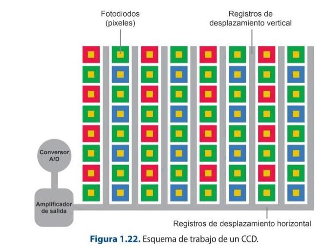
The use of CCDs in professional cameras has brought with it a number of advantages, such as an increase in the lightness of the devices, a reduction in size, greater precision, faster working, longer life, no comet tail phenomenon that used to occur in camera tubes when recording bright spots and, finally, that they are devices that remain unaffected by magnetic fields.
1.4 Camera settings
Explain the difference between CCD VS CMOS Cameras.
1.3.3. Camera parameters and connectors
Other elements found in this section of the camera are detailed below:
1. Filter selection wheel: depending on the lighting conditions present in a scene, the type of filter to be used must be chosen before proceeding with the white balance operation. This wheel has four filters, normally they are: filter 1 -to be used with light sources that have a temperature of approximately 3200 K, normally indoors-, filter 2 +ND, filter 3 and filter +ND will be used for colour temperatures of 5600 K. The choice between one or the other will depend on the colour temperature variation present in the outdoor or indoor scene and weather variations.
There are three steps to perform the white balance of a camera:
1. Select the appropriate camera filter according to the lighting conditions of
the scene.
2. On a white surface, such as a sheet of paper or cardboard, place it in the
area where the recording is to take place.
3. On the camera, make a shot of the detail of the blank sheet of paper, which
is being used as a reference. Once the completely white image area is
obtained, make the white adjustment by pressing the ATW button, located on
the front of the camera, at the bottom.
1.5 White balance
With a professional video camera, perform the white balancing operation under the
following conditions and record several shots. Once the recording has been made,
view the result and analyse the images obtained:
1. Indoor with fluorescent lights and with filter 1.
2. Outdoor with filter 1.
3. Indoor with a window through which natural light passes with filter 1.
2. Gain: This switch allows you to change the gain of the video signal in scenes where
lighting conditions are poor. It is important to note that the use of gain in the recording
of images is detrimental to their clarity, as the resulting image is noisy. So, the more
decibels (dB) of gain, the more noise in the picture and the poorer the picture quality.
This switch usually has three positions L (low), M (medium), H (high), whose values are
0 dB, 6 dB and 9 dB respectively. It should be noted that these values can be
customised and their register can be modified in the relevant configuration menu of
the camera itself in the section corresponding to the gain.
3. A/B memories: these are two options presented by the cameras to be able to
record two different white balances within a scene.
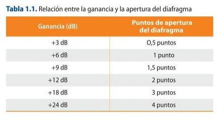
4. Preset button: allows you to set the preset colour temperature settings associated with the different filters. It is used on those occasions when there is no time to perform the white balance in the scene. It is always recommended to perform the white balance and not to use preset button.
5. Colour bars / Cam: this switch allows access to the generation of the bar signal that serves as a reference to establish the correct recording, reproduction and retransmission of the video signal.
6. Gen-Lock: used in multi-camera recordings where cameras need to be synchronised. In this way, one camera would be the reference that would send the composite signal, or so-called Gen-Lock, so that the rest, on receiving it, would synchronise.
7. Shutter: it is used to regulate the passage of light at a specific time. Different shutter speeds can be selected (1/60; 1/125; 1/500; 1/1000 or 1/2000), so that the higher the speed, the more motion blur, and vice versa. This makes it easier to capture scenes with movement at high speed or to record monitors, avoiding image flicker.
8. Video out: or video outputs.
9. Viewfinder: is the device that operates as a reference monitor, so it does not interfere with the quality of the image that is recorded. It has a series of adjustments
necessary to be able to calibrate the viewing of the scene correctly, such as brightness, hue, contrast and peaking. The latter is nothing more than a switch that allows a more accurate selective focusing.
For a correct exposure of a scene it is necessary to activate the zebra exposure indicator in the viewfinder. Once this parameter has been activated, the camera's viewfinder will show the exposure level by means of stripes on the image. The exposure can be adjusted either automatically or manually. In the latter case, the iris must be adjusted manually by turning the corresponding ring until the parameters shown in the image viewfinder correspond to the optimum exposure.
This camera head contains another unit corresponding to the functions of a video recorder (VTR). It contains the following mechanisms:
Display: for quick display of timecode and audio information. Menu controls: this section contains the camera's internal menu accesses and navigators for making specific non-default selections. Audio controls: modifications can be established with respect to the type of audio signal to be recorded by each of the camera's channels. It is possible to select between line and microphone signal, the work with their respective levels and whether this is to be done automatically or manually by the operator. The microphone inputs of a camera are either on the front or on the back, and this can be switched for each of the recording channels present in the camera. Some microphones use phantom power, which is used by condenser microphones. Timecode controls: allow you to know the recording times that are taking place, depending on the type of timecode you have selected. The different types of timecode will be discussed in more detail later.
1.3.5. Types of cameras
The main function of a video camera is to record image and sound. At a professional level, there are many types of cameras to carry out this operation, which will have a series of characteristics, but which can be grouped into three main types of cameras:
1. Studio cameras: these are the ones used in television studios. They are quite heavy, making them difficult to transport. One of the main characteristics is that they cannot record and image quality controls are carried out from the CCU. They may incorporate a computer system called CUE or teleprompter, which allows the text to be passed to the presenter.
2. ENG or Electronic News Gathering cameras: these are more compact and lighter cameras, which facilitates their use in coverage. They are usually used in news programmes. The main characteristic is that, in addition to recording the image, they
record it in files. With the advances in technology, this type of camera has evolved to be more compact and lighter to facilitate the work.
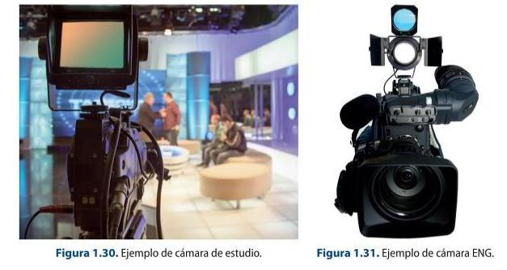
3. DSLR cameras: A digital single-lens reflex camera (digital SLR or DSLR) is a digital camera that combines the optics and the mechanisms of a single-lens reflex camera with a digital imaging sensor.
The reflex design scheme is the primary difference between a DSLR and other digital cameras. In the reflex design, light travels through the lens and then to a mirror that alternates to send the image to either a prism, which shows the image in the viewfinder, or the image sensor when the shutter release button is pressed. The viewfinder of a DSLR presents an image that will not differ substantially from what is captured by the camera's sensor as it presents it as a direct optical view through the main camera lens, rather than showing an image through a separate secondary lens.
In these pictures you can see the elements that compose a DSLR camera:
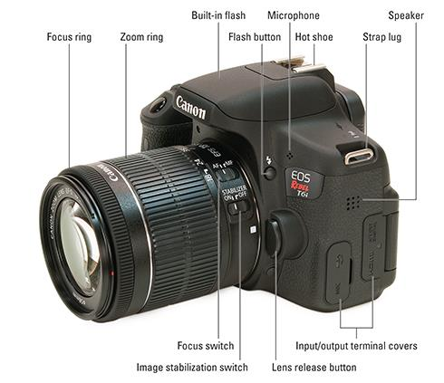
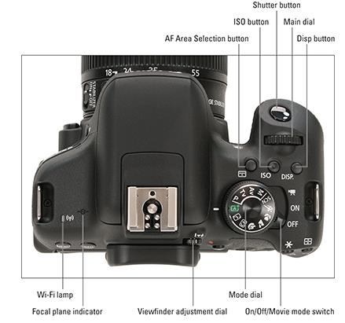
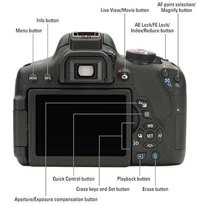
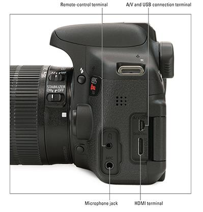
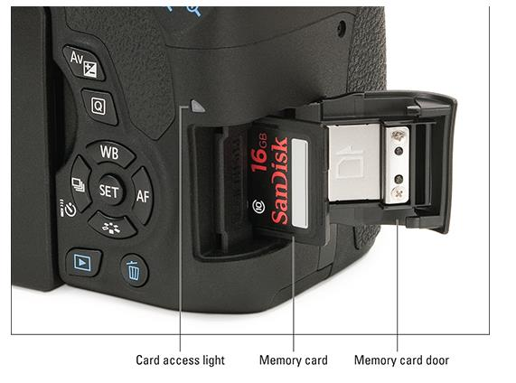
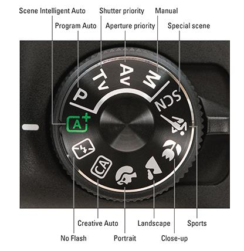
1.3.6. Camera accessories
TRIPOD
This is one of the most commonly used instruments to stabilise the camera.
1. Ball head or head: system that is placed on the top of the tripod and that allows fluid movements of the camera on its axis. It is made up of a series of parts:
a) Swindle: it is the attachment of the camera to the shoe or dovetail. It is rectangular in shape and varies depending on the type of camera. It has a lock to secure the camera.
b) Plate: this is a rectangular-shaped piece that attaches the tripod head to the tripod.
c) Level bubble: system that allows the operator to adjust the horizontality of the camera. It is achieved by adjusting the ball joint on the tripod cup, so the bubble is taken as a reference, which must be in the centre of the circumference drawn.
d) Horizontal and vertical brake: it serves as a safety for the camera when it is not being used, although it is always recommended as far as it is possible to unhook it from the tripod.
e) Friction system: this adjustment allows you to control the resistance offered by the head to the type of movement that is exerted on it. It is important to adjust it according to the speed of the movement to be made.
2. Cup: corresponds to the upper part from which the legs start and which is situated on which the ball joint or head swivels.
3. Legs: consist of a series of telescopic sections that allow the height of the tripod to be adjusted according to the recording needs.
4. Crab: a horizontally extendable support that attaches to the feet of the tripod to prevent it from slipping.
5. Case: a protective system that allows the tripod to be stored and makes it easy to move.
Types of tripods
There are many types of tripods.
1. Folding tripods: these are very simple, sturdy tripods that can be easily folded up and are usually quite light, so they are useful for filming in rough and unstable terrain.
2. Pneumatic tripods: these are portable tripods whose foot is formed by two columns between which a pneumatic counterweight system acts.
3. Rolling tripod or Dolly: a three-wheeled stand that is attached to the foot of the tripod and can be used for moving both outdoors and indoors.
4. Crab: this is a support that can be with or without wheels, which is placed under the tripod to prevent the legs from slipping and opening under the weight of the camera.
5. Monopod: consists of a simple foot on which the camera rests. It has many advantages such as being easy to transport, easy to handle and quick to set up.
6. Steadycam: is an image stabilisation system, operated by an operator, which allows for unlimited motion capture. It consists of:
a) Harness or waistcoat: allows the camera operator to hold the weight of the structure. It helps to distribute the weight of the structure.
b) Articulated arm: it joins the stabiliser with the operator through the blockout, which is a piece that is incorporated in the waistcoat and facilitates adjustment. It is a pneumatic system that allows the structure to be moved closer or further away, as well as raised and lowered in both the x-axis and the y-axis. There are two types of arms depending on their construction: iso-elastic or spring arms.
c) Telescopic pole: this is the part that supports the camera and is made up of a series of elements:
- Gimbal: this is a part that allows the camera to work in 360o in the three axes.
- Monitor: it is a screen that allows to visualize the reference of the scene that is being recorded.
7. Shoulder stabilisers: allow the camera to be fixed on the shoulder and the shot to be directed with the lateral handles.
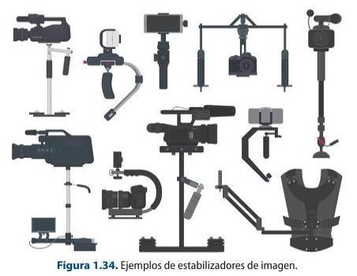
8. Fig rig or steering wheel: this is a system that allows the camera to be placed in the centre of the structure, which is circular, and operated with both arms. This allows greater control over movements and stabilises the image.
9. Pedestals: these are the most commonly used supports in television studios. They consist of a pneumatic central column that is fixed on a base with wheels.
10. Cranes: these come in many sizes and allow a wide variety of shots to be obtained, which help to enrich the discourse. The camera is attached to one end of the crane in a 360o articulated system, and there is an operator who can control it remotely.
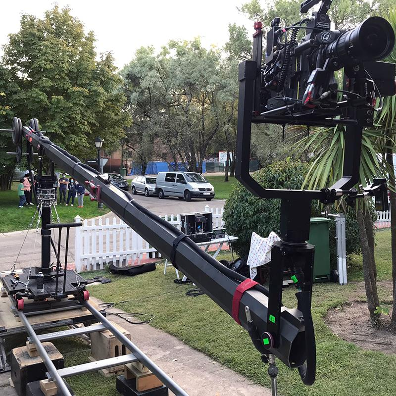
DRONE OR RPA (REMOTELY PILOTED AIRCCAFT)
These are remotely piloted aircraft. There are different types: fixed-wing (those aircraft that glide in the air; they have a great autonomy, so they are very useful for working in large areas), multi-rotor and aquatic.
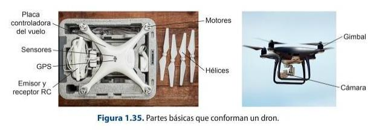
There are basically two uses that can be given to it, and depending on them, the requirements for flying a drone are regulated. The uses are recreational, which does not require AESA (State Aviation Safety Agency) authorisation, and commercial, which requires a drone licence:
Drone licence, which consists of a theoretical-practical certificate on the aircraft.
A Class 2 or LAPL medical certificate; depending on whether the drone to be flown weighs more or less than 25 kg, one or the other licence is required. Liability insurance to cover any possible damage caused by the aircraft. The aircraft must be registered with AESA.
1.4. Technical characteristics of digital video recording systems
A colour television system is capable of capturing the light of an image and synthesising it into its substantial elements (R, G, B), which will be translated into electrical pulses, which will be modulated on a carrier. The carrier has the function of storing and transmitting the resulting signals, depending on the needs of the moment. The signal is then decoded by a receiving device, which carries out the reverse operation, so that other signals are applied to the component signal being sent to enable this encoding-decoding process to be carried out.
Let's look at the two most common television systems:
1. NTSC (National Television System Committee): it is a simultaneous system with the following characteristics:
It works with 525 lines. It uses a line frequency of 15 750 Hz. It uses 60 fields per second. Uses a bandwidth of 4.5 MHz out of a total channel bandwidth of 6 MHz. 29.7 frames per second. Regarding the colour signal work, the colour difference signals are obtained by quadrature modulation of two signals, which are I and Q and which are obtained from the three basic signals corresponding to luminance and chrominance. Some of the countries that use this system are the USA, Japan or Canada.
2. PAL (Phase Alternation Line): this is a simultaneous system with the following characteristics:
The colour difference signals are obtained, as in the NTSC system, by quadrature modulation. The sum and modulation of the U and V signals is called QUAM signal. The bandwidth used is 1.3 MHz for U and V transmission. Some of the countries using this system are Spain, Germany or England.
1.4.1. Format, structure of signals
Video can use two basic technologies: analogue technology and digital technology. In both, the minimum unit of work varies:
In analogue technology (PAL, NTRSC, SECAM), the minimum working unit is the line. In digital technology (HD, Full HD, 2K...), the minimum working unit is the pixel.
The main difference between the above mentioned types of video signals is the bandwidth they use, so when digitising the signal they will need different conditions.
Depending on how the different parameters are combined, the analogue video signal can be of different types, mainly:
Component signal, such as VGA, RGB or YUV. Composite video signal or CVBS, which would correspond to the standard PAL, NTSC or SECAM signal. RGB signal.
For digital video, the different formats in which the video signal can be transmitted would be SDI (Serial Digital Interface) or HD with multi-channel audio and data
information. Coaxial cables with BNC connectors or via optical fibre are used.
1.4.2. Sampling rate, number of bits, compression, aspect ratio
The sampling frequency or simple rate of a digital signal is the number of samples taken in a given time. It is usually expressed by a series of numbers referring to the luminance and chrominance values present in the video signal.
So, for example, if you have a 4:2:2 sampling frequency, it implies that the 4 states that the luminance is sampled in each pixel produced, while the other two numbers refer to the chrominance factors, which are Cr (R-Y) and Cb (B-Y).
The resolution of an image is given by the pixel density of a given image. Resolution is a value that establishes the number of pixels in a given length. It is usually measured in pixels per inch (ppi). It is important to note that the higher the resolution, the more pixels make up the image, so the greater the detail and colour representation. Therefore, resolution is related to:
The pixel density. The size of the image.
The number of colours that can be contained in each pixel that makes up an image depends on the information that a pixel or number of bits can store. Thus, the greater the bit depth, the more colours it can represent.
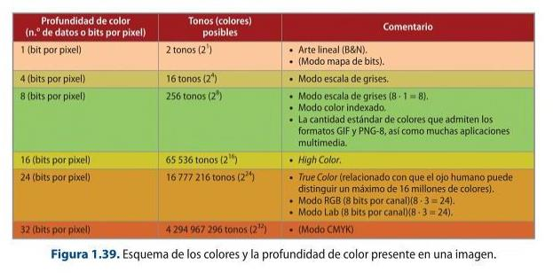
Another aspect to take into account that defines video is the size, i.e. the ratio between the width and height of the image or aspect ratio. Each image size has a different standard.
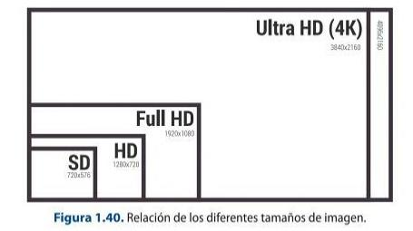
When it comes to optimising file size, it is important to know that this can be done in three different ways:
1. Setting the minimum resolution according to the final destination of the image. 2.
2. Reducing the number of colours used in the image. 3. Compressing the image data so that it weighs less.
1.4.3. Interlaced and progressive scanning and frame rate. SD/HD cameras
The digital image, as discussed above, is composed of pixels. Pixels can be square or rectangular, and the size of a pixel is the ratio between width and height or, in other words, the pixel aspect ratio.
A video is the result of a series of images per second that are captured by exposing them consecutively. Frame rate is the number of frames per second. A frame is made up of one frame (progressive) which, in turn, can be made up of odd and even fields (interlaced).
The main difference between progressive and interlaced formats is that in the former, the chromatic information is reproduced in a single image, whereas in the latter, half of it is reproduced in each image reproduction.
The framerate is the number of frames per second that reproduce the sensation of movement. Depending on this parameter, a series of frame rate standards have been established for use in an audiovisual:
Progressive formats: 24p, 25p, 30p, 48p, 50p, 60p, 72p, 120p. Interlaced formats: 50i, 60i and 330 fps.
Codecs, RAW, log and HDR today
Beyond the DV/MPEG-2 family in the book, modern acquisition records H.264/AVC and the far more efficient H.265/HEVC, plus high-quality mastering codecs Apple ProRes and Blackmagic RAW. 10-bit 4:2:2 colour and camera RAW (ProRes RAW, BRAW) are now available even on affordable bodies.
Cameras shoot in log gamma (S-Log3, Log-C, V-Log) to preserve dynamic range for grading, and deliver HDR masters in HLG or PQ (HDR10, Dolby Vision). For streaming delivery the current royalty-free codec is AV1 (2018).
Sources: HEVC (Wikipedia) · AV1 (Wikipedia)
Tape, tubes and interlaced SD
Videotape formats (DV, DVCAM, HDV, Digital Betacam), tube pick-up cameras and interlaced standard definition covered here are now historical. Acquisition is file-based and progressive; interlacing survives only in legacy broadcast chains.
1.5. Still image and digital video formats
Digital images are representations of 0 and 1, i.e. binary code, corresponding to a series of electrical pulses. The still image can be stored in many types of formats, but it is essential to make a first distinction between bitmap images and vector images.
Vector images are made up of a series of objects that can be modified individually without affecting the rest, i.e. they are not made up of pixels. Each vector graphic has its own attributes, such as contour line, thickness and fill, the modification of which is stored in a mathematical list that contains the position of the points and the peculiarities of the vectors and the properties of the objects.
The vectors that make up a vector image are formed by Bézier curves. The Bézier curve is made up of different elements:
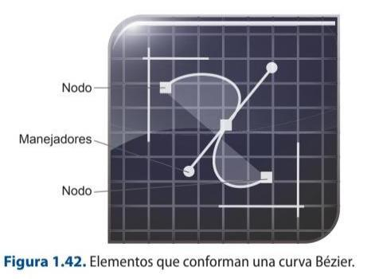
Nodes or anchor points, which delimit the start and end. Handles that serve as control instruments and affect the traceability of the curve or line.
Bitmap images or raster images are made up of a grid of pixels to which a specific colour and luminance are assigned. This characteristic means that, when an operation is performed on such an image to modify the size, a deformation occurs, since the distribution of the pixels and their constituent characteristics is changed. Pixels are the basic components of bitmap images and are characterised by:
Shape: square or rectangular. Position relative to the rest of the pixels. Colour depth or the ability to store hue.
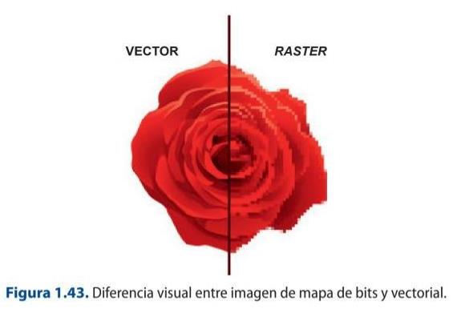
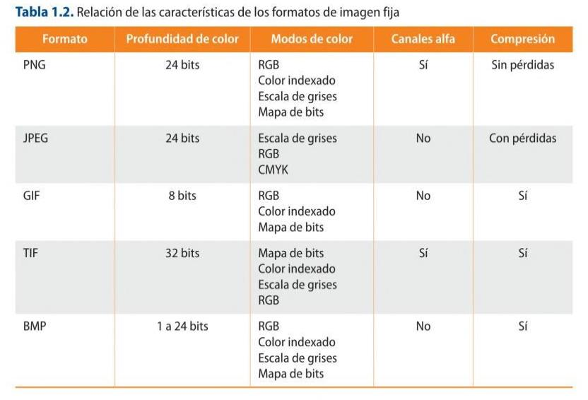
Recording media: CFexpress and NVMe SSDs
SD cards and spinning hard disks have been joined by CFexpress (Type A/B) and external NVMe SSDs. They use the PCIe/NVMe bus to sustain the very high, constant bit-rates that 4K/8K RAW and high-frame-rate recording demand.
Sources: CFexpress (Wikipedia)